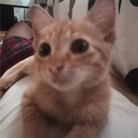
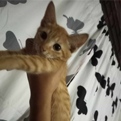
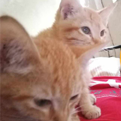
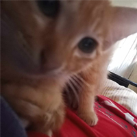

| MEET MIX N' MATCH | |
|

MIX Meet Mix, the big brother and the one who leads. A cute, loving, and prideful aristocat who's sole desire is to eat and play. He also loves lying down and sleeping on our stomachs simply showing his aristocatsy! |

MATCH Meet Match, the right hand of Mix. The one who follows and learns things from his twin. He is usually shy sticking to his brother but he is also playful and energetic, especially with my sister. Envious! |
|
The Aristocats' Life
They were two stray cats strolling on the streets presumably trying to find their mom. However, she wasn't seen around the vicinity and it was about to pour down so we took some pity. We sheltered them for the moment and nourished them before releasing them back. However, they were too little and cute to the point that they came back after a while trying to persuade us to take them home. From that day, the bond grew and both of them are now part of our family. It has been 6 years since they've been living with us. They are usually playful and quiet but also stubborn; as most cats are. Frankly, they have a habit of sticking around ever since we adopted them so you can see them together all the time, which I find really wholesome and adorable.
Why Aristocats?
You may probably wonder why I call them aristocats. Well, it's not only because they are stubborn but they seem to love posing high in our staircase as if they were two princes looking down on their subjects or peasants. Although, this does not occur that much, or maybe because I have to go to school; they still walk with elegance and splendor. |

|
Differentiate Them!
|
|

|